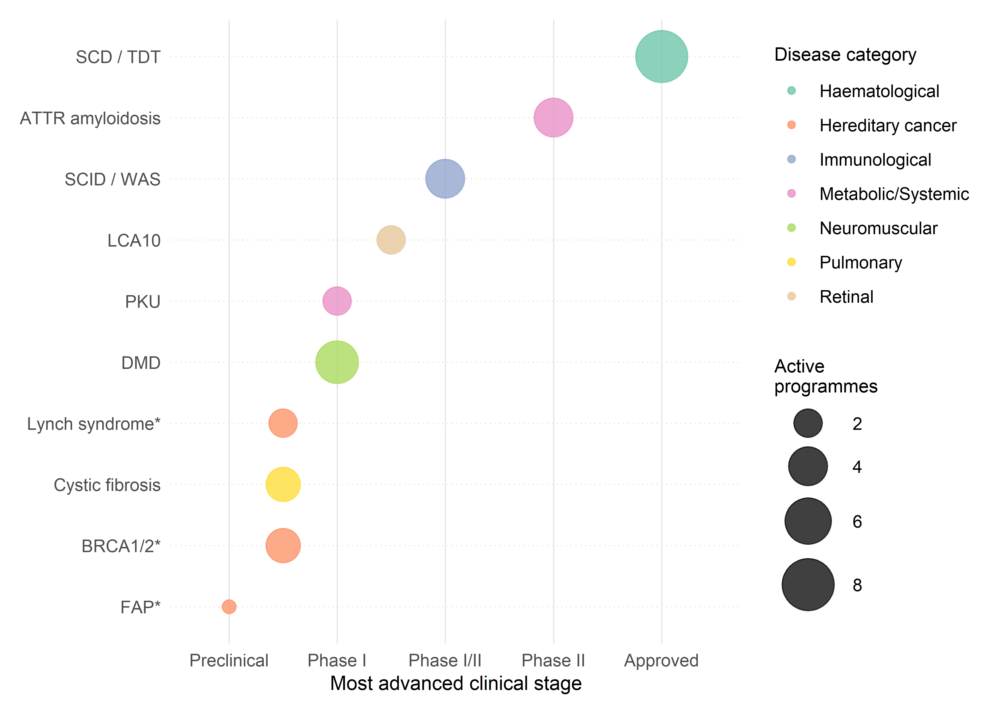
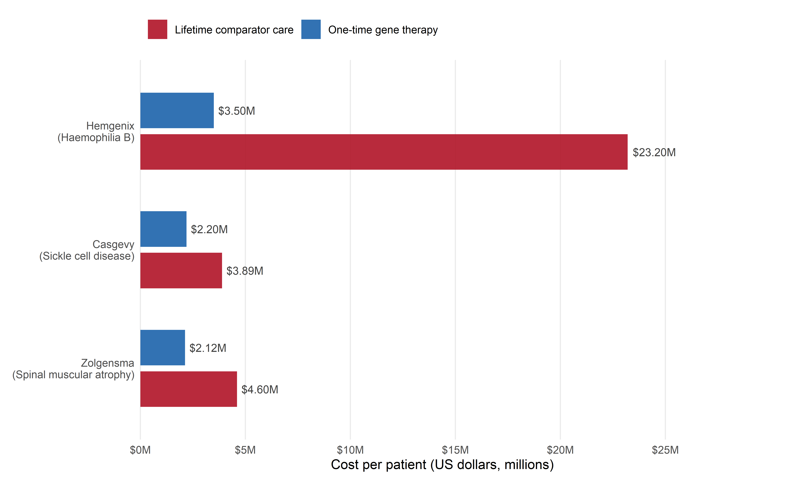

| Disease | Gene(s) | Target tissue | Editing strategy | Delivery | Clinical stage1 | AI contribution |
|---|---|---|---|---|---|---|
| Monogenic therapeutic targets | ||||||
| SCD / TDT | HBB / BCL11A | HSPCs | Gene disruption (BCL11A) / base editing (HBB) | Ex vivo (electroporation) | Approved (Casgevy) | Guide design, repair outcome prediction, delivery optimisation |
| ATTR amyloidosis | TTR | Hepatocytes | Gene disruption | LNP (IV, in vivo) | Phase II/III | LNP formulation screening, tissue tropism prediction |
| LCA10 | CEP290 | Retinal photoreceptors | Intronic excision | AAV5 (subretinal) | Discontinued (Phase I/II) | Guide design for dual-cut excision |
| DMD | DMD | Skeletal / cardiac muscle | Exon skipping | AAV / dual-AAV (systemic) | Preclinical | Cas variant engineering (EVOLVEpro), delivery optimisation |
| Cystic fibrosis | CFTR | Airway epithelium | Gene correction (HDR / prime editing) | LNP / AAV (inhaled / instilled) | Preclinical | Correction efficiency prediction, delivery to airway |
| SCID-X1 / WAS | IL2RG / WAS | HSPCs | Gene correction | Ex vivo (electroporation) | Phase I/II | Guide design, outcome prediction |
| PKU | PAH | Hepatocytes | Base editing | LNP (IV, in vivo) | Preclinical | Base editing window optimisation |
| Fabry disease | GLA | Multiple (kidney, heart) | Gene correction / insertion | LNP / AAV (IV, in vivo) | Preclinical | Delivery optimisation, variant effect prediction |
| Hereditary cancer predisposition syndromes | ||||||
| Lynch syndrome* | MLH1, MSH2, MSH6, PMS2 | Multiple (colon, endometrium, urinary tract) | Functional screens / CRISPR diagnostics | In vitro (cell lines) | Research / preclinical Dx | VUS classification (AlphaMissense, EVE), multi-omic risk prediction, liquid biopsy signal detection |
| BRCA1/2* | BRCA1, BRCA2 | Multiple (breast, ovary, prostate) | Saturation genome editing | In vitro (cell lines) | Research (SGE complete for BRCA1) | Variant effect prediction integrated with SGE function scores |
| Li-Fraumeni* | TP53 | Multiple (broad cancer spectrum) | Functional screens | In vitro (cell lines) | Research | Gain-of-function variant classification |
| FAP* | APC | Colonic epithelium | Functional screens / prospective somatic editing | In vitro (cell lines) | Research | Variant classification, risk stratification |
| 1 For hereditary cancer predisposition syndromes, 'clinical stage' refers to the CRISPR-AI application (functional screens, diagnostics, variant classification) rather than to a direct gene therapy. | ||||||
| Data compiled from ClinicalTrials.gov, published reviews, and PREDI-LYNCH project documentation as of early 2026. | ||||||
4 Genetic Rare Diseases as Therapeutic Targets for CRISPR-AI
4.1 Introduction: the unmet need and the editing opportunity
More than 7,000 rare diseases have been catalogued, approximately 80% of which have an identified genetic basis, and collectively they affect an estimated 300 million people worldwide (Nguengang Wakap et al., 2020). The vast majority — perhaps 95% — lack any approved therapy. For the subset that are monogenic, CRISPR-based editing offers a mechanistically direct intervention: correct or disrupt the causative variant and, in principle, resolve the disease. This directness is precisely what has made rare monogenic conditions the primary clinical proving ground for genome editing, from the first CRISPR clinical trial in 2019 to the landmark approval of Casgevy (exagamglogene autotemcel) in late 2023.
Yet the clinical reality is more complex than the molecular logic suggests. The translation of CRISPR-AI systems into rare disease therapeutics is shaped by constraints that are only partially technical. Which diseases attract investment depends on patient population size, the availability of natural history data, the tractability of delivery to affected tissues, and the advocacy capacity of patient organisations. The economic models that sustain pharmaceutical development — predicated on large patient populations and repeated dosing — are structurally misaligned with one-time curative therapies for conditions affecting a few thousand patients. And the regulatory frameworks through which these therapies must pass were designed, overwhelmingly, for common diseases with large randomised controlled trials as the evidentiary standard.
The chapter that follows moves from monogenic haematological disorders — where clinical proof of concept is now established — through hereditary cancer predisposition syndromes, with sustained attention to Lynch syndrome and the PREDI-LYNCH project. Across these cases, AI contributes to target selection, editing strategy design, variant classification, and diagnostic development, but the mode of contribution varies with the biology: no single computational approach generalises from haemoglobin switching to mismatch repair deficiency to dystrophin rescue. The comparative table in Table 4.1 makes this variation visible.
4.2 Monogenic rare diseases amenable to editing
4.2.1 Haemoglobinopathies: sickle cell disease and beta-thalassaemia as proof of concept
The haemoglobinopathies — sickle cell disease (SCD) and beta-thalassaemia — occupy an unusual dual status in the history of genome editing: they are at once rare diseases in high-income countries and among the most common monogenic disorders globally, with an estimated 300,000 newborns affected by SCD each year, predominantly in sub-Saharan Africa and South Asia (Piel et al., 2017). This epidemiological profile has made them the first diseases for which CRISPR-based therapies have achieved regulatory approval, while simultaneously highlighting the access inequities that will define the global impact of gene editing for decades to come.
The therapeutic strategy underpinning Casgevy does not correct the causative HBB mutation directly. Instead, it disrupts BCL11A, a transcriptional repressor of fetal haemoglobin (HbF) production, in the patient’s own haematopoietic stem and progenitor cells (HSPCs) ex vivo. By derepressing HBB (the gene encoding the gamma-globin subunit of HbF), the edited cells produce elevated levels of HbF after reinfusion, which inhibits the polymerisation of sickle haemoglobin (HbS) in SCD and compensates for the absent or defective adult beta-globin in TDT. The approach exploits a well-characterised natural phenomenon — the hereditary persistence of fetal haemoglobin (HPFH) — that had been known for decades to ameliorate both conditions (Forget, 1998).
The CLIMB-121 Phase 1/2/3 trial for SCD enrolled patients aged 12–35 years with at least two severe vaso-occlusive crises (VOCs) per year. The pivotal NEJM publication reported that 29 of 30 evaluable patients (97%) achieved the primary endpoint of freedom from severe VOCs for at least 12 consecutive months, with a median follow-up of 19.3 months (Frangoul et al., 2024). By December 2025, longer-term data presented at the ASH annual meeting extended the follow-up to over five years for the earliest-treated patients, with 100% of 45 patients achieving VOC freedom for at least 12 months and a mean VOC-free duration of 35.3 months. Levels of HbF and allelic editing remained stable throughout the observation period, and the safety profile was consistent with myeloablative busulfan conditioning and autologous transplant rather than with the gene editing procedure itself.
For TDT, the parallel CLIMB-111 trial demonstrated that 98.2% of patients (55 of 56) achieved transfusion independence for at least 12 months, with one patient reaching six years of follow-up without requiring transfusions. These results are, by any standard, transformative: they constitute the first demonstration that a single CRISPR-based intervention can durably eliminate the clinical manifestations of a genetic disease.
However, several features of the Casgevy approach constrain its generalisability. The manufacturing process is complex, patient-specific, and requires myeloablative conditioning — a procedure with significant toxicity, including weeks of pancytopenia and associated infection risk. The cost, estimated at $2.2 million per patient in the United States, places the therapy beyond the reach of the vast majority of SCD patients worldwide, who live in low- and middle-income countries with limited haematology infrastructure. The ex vivo approach, while effective for haematopoietic cells, cannot be extended to diseases affecting non-harvestable tissues such as the brain, heart, or lung parenchyma. And the disruption strategy — knocking out a repressor rather than correcting the causative mutation — is available only for diseases where such a bypass mechanism exists.
For comparison, the estimated lifetime cost of managing SCD with standard care (hydroxyurea, transfusions, hospitalisations) exceeds $1.6 million in the United States. Casgevy’s $2.2 million list price is thus potentially cost-effective over a full lifespan — but only in health systems that can absorb the upfront expenditure and sustain 15 years of post-treatment surveillance.
Each of these constraints defines a research frontier. Base editing and prime editing approaches that directly correct HBB mutations are in preclinical and early clinical development, potentially offering more precise outcomes without the need for HbF derepression (Newby et al., 2021). In vivo delivery strategies — primarily LNP-based — could in principle eliminate the need for myeloablative conditioning and ex vivo cell manipulation. The AI-driven optimisation tools described in Chapters 2 and 3 find concrete application here: guide RNA design for BCL11A enhancer disruption, repair outcome prediction for base editing of HBB, and delivery vehicle optimisation for in vivo approaches each draw on the computational methods surveyed in Part I.
4.2.2 Transthyretin amyloidosis: the in vivo frontier
Where Casgevy established the ex vivo model for CRISPR therapeutics, the treatment of transthyretin (ATTR) amyloidosis opens the in vivo frontier. ATTR amyloidosis is caused by misfolded transthyretin protein, produced primarily by the liver, that accumulates as amyloid fibrils in the heart and peripheral nerves. The hereditary form results from pathogenic variants in the TTR gene; the wild-type form, now recognised as far more prevalent than previously assumed, results from age-related misfolding of the normal protein. Both forms are progressive and, until recently, fatal within a decade of cardiac involvement.
Intellia Therapeutics’ NTLA-2001 delivers CRISPR-Cas9 components via LNP to hepatocytes in vivo, targeting the TTR gene for disruption and reducing circulating TTR protein levels. Phase 1 data published in the NEJM demonstrated dose-dependent knockdown of serum TTR by up to 93% after a single intravenous infusion, with sustained reductions at 28-day follow-up (Gillmore et al., 2021). Subsequent Phase 1/2 data have shown durability extending beyond two years, with improvement in neuropathy scores and stabilisation of cardiac biomarkers in patients with the hereditary polyneuropathy form. The approach is notable for its simplicity relative to Casgevy: a single intravenous infusion, no myeloablative conditioning, no cell harvesting, no ex vivo manipulation. It is the first demonstration that CRISPR-based genome editing can be delivered systemically to a human organ and achieve therapeutically meaningful target knockdown.
The LNP formulation used by Intellia was developed through iterative screening that, while not publicly described as Bayesian optimisation, exemplifies the high-dimensional formulation space discussed in Chapter 3. Extending in vivo editing beyond the liver — which readily takes up LNPs due to the fenestrated endothelium and ApoE-mediated uptake — remains a major delivery challenge where ML-predicted tissue tropism and engineered LNP compositions are essential tools.
4.2.3 Retinal dystrophies, muscular dystrophies, and other frontiers
The remaining monogenic rare diseases under active CRISPR clinical or late-preclinical development span a range of tissues and editing strategies, each with distinct technical challenges.
Leber congenital amaurosis type 10 (LCA10), caused by an intronic variant in CEP290, was the target of the first in vivo CRISPR clinical trial (Editas Medicine’s EDIT-101), which delivered SaCas9 via subretinal AAV5 injection to excise the pathogenic splice-altering variant. While the programme demonstrated safety and some evidence of visual improvement, its clinical development was discontinued in 2023 due to strategic prioritisation decisions by the sponsor rather than safety or efficacy failure — illustrating how the economic fragility of rare disease programmes can terminate scientifically viable approaches (Editas Medicine, 2023).
Duchenne muscular dystrophy (DMD), affecting approximately 1 in 3,500–5,000 male births, poses a fundamentally different problem: the affected tissue (skeletal and cardiac muscle) comprises approximately 40% of body mass, requiring systemic delivery at scale. CRISPR-based exon-skipping strategies — using paired guides to excise one or more exons and restore the dystrophin reading frame — have shown promise in animal models, but the combination of large cargo size (SpCas9 exceeds AAV packaging capacity), the need for systemic delivery, and the immunogenicity of viral vectors has slowed clinical translation. Smaller Cas variants (Cas12f, CasMINI) and dual-AAV strategies are under development, and the ML-guided protein engineering approaches described in Chapter 3 — particularly EVOLVEpro’s five-fold improvement in Cas12f activity — address precisely this bottleneck (Jiang et al., 2025).
Cystic fibrosis, rare immunodeficiencies (SCID-X1, Wiskott–Aldrich syndrome), and metabolic storage diseases (phenylketonuria, Fabry disease) are at various stages of preclinical development. In each case, the technical challenge is tissue-specific: airway epithelium for cystic fibrosis, HSPCs for immunodeficiencies, hepatocytes or neuronal cells for storage diseases. The unifying theme is that the computational tools developed in Part I — guide design, outcome prediction, delivery optimisation — find distinct applications in each context, and no single AI model generalises across all of them.
4.3 Hereditary cancer predisposition syndromes
The diseases discussed above are monogenic in the strict sense: a single pathogenic variant is both necessary and sufficient to cause disease. Hereditary cancer predisposition syndromes occupy a different category: they are monogenic in their inheritance (a germline variant in a single gene confers the predisposition) but polygenic and stochastic in their manifestation (cancer develops through the accumulation of additional somatic mutations in a carrier’s lifetime). This distinction has profound implications for the role of CRISPR-AI technologies, which in this context serve not primarily as therapeutic agents but as tools for variant classification, early detection, and — prospectively — somatic intervention.
4.3.1 Lynch syndrome: the most common hereditary cancer predisposition
Lynch syndrome (LS) is an autosomal dominant condition caused by pathogenic germline variants in one of the DNA mismatch repair (MMR) genes: MLH1, MSH2, MSH6, or PMS2, or by deletions in the EPCAM gene that lead to epigenetic silencing of MSH2. It is the most common monogenic hereditary cancer predisposition syndrome worldwide, affecting approximately 1 in 440 individuals of European ancestry (Lynch et al., 2015). Carriers face substantially elevated lifetime risks of colorectal cancer (CRC, 40–80%), endometrial cancer (40–60%), and urothelial tract cancer (up to 25%), as well as increased risks of gastric, ovarian, pancreatic, and other malignancies.
Despite its prevalence, LS remains dramatically underdiagnosed. Of the estimated 2 million carriers in Europe, only approximately 5% are currently under cancer surveillance — a statistic that reflects failures at multiple levels: incomplete family history ascertainment, underuse of tumour-based MMR screening in routine pathology, limited access to genetic counselling, and insufficient public awareness of hereditary cancer risk. Tumour-based universal MMR screening by immunohistochemistry and microsatellite instability (MSI) testing has been recommended by multiple guidelines and is now routine in many centres, but it identifies carriers only after a first cancer diagnosis, precisely the scenario that effective surveillance should prevent.
If approximately 1 in 440 Europeans carries a pathogenic MMR variant, the estimated 2 million carriers translate into roughly 1.9 million individuals unaware of their elevated cancer risk — a public health gap that conventional tumour-based screening, which identifies carriers only after a cancer diagnosis, cannot close by design.
The surveillance gap is compounded by the inadequacy of current screening modalities for the three most common LS-associated cancers. For CRC, colonoscopic surveillance every one to two years is the standard of care and has been shown to reduce CRC-related mortality, yet up to 60% of LS carriers still develop CRC despite adherence to surveillance, and 80% develop some form of cancer during their lifetime. For endometrial cancer, the available screening tools — transvaginal ultrasound and endometrial biopsy — are invasive, painful, and supported by evidence of low quality with contradictory outcomes; as a consequence, many women with LS are counselled to undergo prophylactic hysterectomy in their early forties, a procedure with significant implications for reproductive autonomy and quality of life. For urothelial cancers, there is no established surveillance modality: uretero-cystoscopy is invasive and expensive, while urinalysis and urine cytology have insufficient sensitivity. These cancers are therefore often detected at an advanced stage, when treatment options are limited and prognosis is poor.
4.3.2 PREDI-LYNCH: non-invasive early detection through liquid biopsy and AI
It is in this context — a common hereditary cancer predisposition with inadequate surveillance tools — that the PREDI-LYNCH project operates. The project responds to a specific gap: despite decades of genetic counselling infrastructure and colonoscopy-based surveillance, the majority of European LS carriers remain unidentified, and those who are identified still face cancer risks that current screening cannot adequately mitigate. PREDI-LYNCH (Horizon Europe, Grant Agreement 101213916; €13.6 million; 28 partners across 16 European countries; coordinated by Oslo University Hospital under Mev Dominguez Valentin) was designed to evaluate whether non-invasive liquid biopsy technologies can fill this gap for the three most common LS-associated cancers: CRC, endometrial cancer, and urothelial cancer.
The project’s methodological core is an innovative clinical trial design that simultaneously evaluates multiple liquid biopsy-based approaches — including circulating tumour DNA (ctDNA) analysis, microsatellite instability markers, and metabolomic profiling — in a Lynch syndrome population. The partnering biomarker companies (GNT, MSInsight, MSICare, MSIPlus, and Elypta) bring complementary technologies that collectively span the multi-omic spectrum. This parallel-evaluation design is itself a departure from the single-technology validation model that dominates biomarker development: by testing multiple analytes in the same cohort under harmonised conditions, PREDI-LYNCH can generate comparative performance data that no single-company trial would produce.
Artificial intelligence is integral to this approach at three levels. At the analytical level, AI algorithms identify traces of cancer in multi-omic liquid biopsy data — a signal detection problem in which the relevant biomarkers may be present at vanishingly low concentrations in the bloodstream of presymptomatic individuals. At the systems level, AI supports the integration of heterogeneous data types (genomic, proteomic, metabolomic, clinical) into risk prediction models that can stratify LS carriers according to their individual cancer risk profile. At the implementation level, the project addresses the challenge of ensuring that AI-powered detection methods perform comparably across the diverse healthcare systems of the 16 participating countries — a requirement that demands both technical robustness (the models must work across different laboratory platforms and sample handling protocols) and socio-economic validation (the solutions must be affordable and implementable in systems with widely varying resources).
PREDI-LYNCH operates within the broader EARLYSCAN cluster, established under the EU Mission on Cancer’s priority area ‘Prevention & Early Detection – Early Detection of Heritable Cancers’. EARLYSCAN brings together three complementary Horizon Europe projects: PREDI-LYNCH (Lynch syndrome), DISARM (ovarian cancer), and SHIELD (pancreatic ductal adenocarcinoma in familial/genetic risk populations). The cluster’s shared governance model — with dedicated working groups covering scientific oversight, clinical pathways, communication, and data reuse — reflects an ambition not merely to generate evidence within isolated projects but to ensure that evidence generated across different countries and health-system contexts is comparable, reusable, and ready for implementation. Joint activities will include harmonised clinical pathway definitions, minimum endpoint dictionaries, shared recruitment and attrition reporting, and common ethics- and GDPR-compliant data practices. The first Annual Cluster Meeting is planned for May 2026.
4.3.3 The CRISPR-AI intersection in Lynch syndrome
While CRISPR-based editing does not directly treat Lynch syndrome — the germline MMR variants are present in every cell and the cancers arise stochastically — the intersection of CRISPR and AI technologies with LS is nonetheless substantial and multifaceted.
CRISPR functional screens are essential for the classification of variants of uncertain significance (VUS) in MMR genes. A significant fraction of genetic variants identified through clinical testing cannot be classified as pathogenic or benign using computational prediction alone. Saturation genome editing — in which every possible single-nucleotide variant at a locus is introduced by CRISPR-mediated editing and the functional consequences are measured in parallel — provides high-throughput experimental evidence for variant classification. Findlay and colleagues demonstrated this approach for BRCA1, and analogous efforts are underway for MMR genes, where CRISPR-Cas9 screens combined with MSI-based readouts can directly assess the impact of individual variants on mismatch repair function (Findlay et al., 2018). The AI component enters through the integration of functional screen data with computational variant effect predictors (AlphaMissense, ESM-1v, EVE), creating hybrid classification frameworks that combine experimental and predicted evidence (Cheng et al., 2023).
A separate line of convergence runs through CRISPR-based diagnostic platforms. SHERLOCK (Cas13-based) and DETECTR (Cas12-based) detect specific nucleic acid sequences with attomolar sensitivity and can be configured to identify MSI signatures, somatic mutations in KRAS or TP53, or cancer-associated methylation patterns in cell-free DNA. While not yet integrated into the PREDI-LYNCH trial design, they address the same patient population and the same biological question — early cancer detection in LS carriers — through a technologically convergent approach: CRISPR as diagnostic rather than therapeutic tool.
More speculatively, somatic editing strategies for MMR restoration in precancerous lesions point toward a longer-term therapeutic possibility. If early-stage MMR-deficient lesions could be identified (through the liquid biopsy approaches under development) and their mismatch repair function restored through targeted delivery of editing machinery to the affected tissue, the progression to invasive cancer could in principle be interrupted. This remains a hypothetical scenario — the delivery challenges are formidable, and the ethical and regulatory implications of editing somatic cells in situ to prevent cancer are unexplored — but it illustrates the potential convergence of the diagnostic and therapeutic dimensions of CRISPR-AI in hereditary cancer.
4.3.4 BRCA1/2, Li-Fraumeni syndrome, and familial adenomatous polyposis
Lynch syndrome is not the only hereditary cancer predisposition where CRISPR-AI tools are relevant. Pathogenic variants in BRCA1 and BRCA2 confer elevated risks of breast, ovarian, prostate, and pancreatic cancers, and saturation genome editing of BRCA1 has already yielded comprehensive functional maps of nearly every possible single-nucleotide variant across critical exons, providing a resource for clinical variant interpretation that significantly outperforms computational prediction alone (Findlay et al., 2018). Li-Fraumeni syndrome, caused by germline TP53 variants, presents unique challenges for both variant classification (the TP53 protein has complex gain-of-function and dominant-negative effects) and surveillance (the cancer spectrum is broad and includes childhood malignancies). Familial adenomatous polyposis (FAP), caused by APC variants, is amenable to surgical prophylaxis (total colectomy) but raises questions about whether somatic editing of colonic epithelium could, in the future, offer a less radical alternative. In each case, the intersection with AI centres on variant classification, risk stratification, and the design of surveillance strategies tailored to individual genetic profiles.

4.4 CRISPR functional screens for variant classification
4.4.1 The VUS problem and the case for functional evidence
The clinical interpretation of genetic variants identified through diagnostic sequencing depends on their classification into one of five categories defined by the American College of Medical Genetics and Genomics (ACMG): pathogenic, likely pathogenic, variant of uncertain significance (VUS), likely benign, or benign (Richards et al., 2015). For many genes, including the MMR genes relevant to Lynch syndrome, a substantial proportion of identified variants fall into the VUS category — clinically uninformative results that leave patients and clinicians in a state of diagnostic uncertainty, unable to act on the genetic information but equally unable to dismiss it.
The VUS problem is fundamentally a data problem: for rare variants, there is insufficient clinical, segregation, or population-frequency evidence to reach a confident classification. Computational predictors (SIFT, PolyPhen, CADD, REVEL, and more recently AlphaMissense) provide in silico estimates of pathogenicity, but their accuracy varies by gene and variant type, and they are explicitly insufficient as sole evidence for clinical classification under ACMG guidelines.
4.4.2 Saturation genome editing: experimental evidence at scale
Saturation genome editing (SGE) — also termed multiplex assays of variant effect (MAVEs) — addresses the VUS problem by generating experimental functional data for every possible variant at a locus, regardless of whether that variant has been observed in patients. The approach, pioneered by Findlay and colleagues for BRCA1, uses CRISPR-mediated HDR to introduce each variant individually into the endogenous locus in a haploid or near-haploid cell line, then applies a functional selection (e.g., cell viability for essential genes, reporter assays for enzymatic activity) to classify variants as functionally normal or abnormal (Findlay et al., 2018).
The resulting ‘function scores’ — continuous values reflecting the fitness of each variant under selection — correlate strongly with clinical pathogenicity classifications for variants with known status, and provide prospective evidence for the thousands of possible variants that have not yet been observed clinically. For BRCA1, SGE data have been incorporated into ClinVar submissions and are used by clinical laboratories to resolve VUS classifications, with demonstrable impact on patient management.
Extending SGE to MMR genes relevant to Lynch syndrome is technically more challenging, because the functional readout (mismatch repair activity) is less directly tied to cell viability and requires specialised assay systems. CRISPR-Cas9 screens using MSI reporters — cell lines engineered with microsatellite repeat sequences whose instability serves as a readout for MMR deficiency — offer one solution. These screens can be combined with deep mutational scanning of individual MMR domains and co-segregation analysis of candidate variants in patient families, creating a multi-evidence framework for variant classification in which each source of evidence has distinct strengths and limitations.
4.4.3 AI-assisted integration of functional and computational evidence
The integration of experimental functional data with computational predictions and clinical evidence is itself a machine-learning problem. Bayesian frameworks that combine prior probabilities from population frequency and computational prediction with likelihood ratios derived from functional assays, family co-segregation, and clinical phenotype data are now being developed for variant classification. The AI component enters not only through the computational predictors themselves but through the integration layer: learning the optimal weighting of different evidence sources for different genes, variant types, and clinical contexts.
The PREDI-LYNCH project’s emphasis on AI-integrated data management plans, harmonised across European clinical sites, bears directly on this challenge. The classification of MMR gene VUS requires combining data generated in different laboratories, using different assay platforms, across different populations — precisely the kind of heterogeneous data integration problem that machine-learning frameworks are designed to address, and that EARLYSCAN’s shared data practices are intended to support.
4.5 Diagnostic applications of CRISPR
4.5.1 SHERLOCK and DETECTR: CRISPR-based nucleic acid detection
The discovery of collateral cleavage activity in Cas13 (SHERLOCK) and Cas12 (DETECTR) proteins opened an entirely unexpected application domain for CRISPR systems: highly sensitive, specific, and programmable nucleic acid detection (Chen et al., 2018; Gootenberg et al., 2017). When Cas13a binds its RNA target, it activates a non-specific RNase activity that cleaves reporter molecules in the reaction, producing a fluorescent or lateral-flow signal. DETECTR exploits an analogous collateral DNase activity in Cas12a. Both platforms achieve attomolar sensitivity, operate at ambient or near-ambient temperature (when combined with isothermal amplification), and can be configured to detect virtually any nucleic acid sequence, including single-nucleotide polymorphisms, pathogen genomes, and cancer-associated mutations.
For Lynch syndrome and other hereditary cancer contexts, CRISPR diagnostics offer the potential for rapid, low-cost detection of cancer-associated molecular signatures in liquid biopsy specimens. Specific applications under investigation include the detection of MSI-high signatures in cell-free DNA — a hallmark of MMR-deficient cancers — and the identification of hotspot somatic mutations (e.g., in KRAS, BRAF, PIK3CA) that indicate the presence of a developing tumour. The portability and low equipment requirements of lateral-flow CRISPR diagnostics also raise the possibility of point-of-care testing in community settings, potentially extending LS surveillance beyond specialised oncogenetics clinics.
It should be noted that CRISPR-based diagnostics are not currently included in the PREDI-LYNCH trial design, which focuses on established liquid biopsy platforms from commercial partners. However, the convergence is clear: the same patient population, the same biological analytes (circulating nucleic acids), and the same clinical question (early cancer detection in genetically predisposed individuals) are addressed by both approaches. Future iterations of LS surveillance programmes may integrate CRISPR-based detection as a complementary or confirmatory layer within a multi-analyte diagnostic pipeline.
4.6 Economic and access challenges in rare disease therapy
4.6.1 The structural misalignment of gene therapy economics
The approval of Casgevy crystallised a problem that had been building since the first gene therapies reached the market: the economic models of the pharmaceutical industry are structurally misaligned with one-time curative therapies for rare diseases. Casgevy is priced at $2.2 million per patient in the United States. Zolgensma (onasemnogene abeparvovec, for spinal muscular atrophy) is priced at $2.1 million. Luxturna (voretigene neparvovec, for inherited retinal dystrophy) was priced at $850,000 per eye. These are not arbitrary figures: they reflect the manufacturers’ estimates of lifetime healthcare cost savings (which, for SCD, are estimated at $4–6 million per patient in the US), the small patient populations across which development costs must be amortised, and the absence of repeat dosing to generate ongoing revenue.
But cost-effectiveness at the system level does not translate into affordability at the point of care. Most health systems operate under annual budget constraints that cannot accommodate multi-million-dollar single-dose therapies, even when those therapies are cost-effective over a patient’s lifetime. Outcomes-based payment agreements — in which the manufacturer is compensated only if specified clinical endpoints are achieved — have been proposed and, in some cases, implemented (Vertex has established an outcomes-based arrangement with the US Centers for Medicare & Medicaid Services for Casgevy), but these models are complex to administer and do not resolve the fundamental tension between upfront cost and long-term value.

The global access dimension is starker still. SCD affects approximately 400,000 newborns annually, the vast majority in sub-Saharan Africa and India — regions where per-capita healthcare expenditure is measured in hundreds, not thousands, of dollars. The infrastructure requirements of Casgevy (apheresis, CD34+ cell selection, myeloablative conditioning, specialised infusion centres, long-term follow-up) are absent in precisely the settings where the disease burden is greatest. The AI-optimised in vivo editing approaches described in this monograph — if they can be developed to the point of a single intravenous injection without myeloablative conditioning — would dramatically lower the delivery infrastructure requirements. But the pricing challenge remains, and it is not clear that the pharmaceutical industry’s current incentive structures can resolve it.
4.6.2 Health technology assessment for hereditary cancer surveillance
For hereditary cancer predisposition syndromes like Lynch syndrome, the economic challenge takes a different form. The intervention is not a one-time curative gene therapy but a lifetime surveillance programme whose costs accumulate over decades and whose benefits are probabilistic (not every carrier will develop cancer) and temporally distant (cancers prevented at age 55 do not generate savings until age 55). Health technology assessment (HTA) frameworks such as those used by NICE in England, the Gemeinsamer Bundesausschuss in Germany, or CADTH in Canada evaluate these programmes against incremental cost-effectiveness ratios (ICERs), typically requiring demonstration that the cost per quality-adjusted life year (QALY) gained falls below a jurisdiction-specific willingness-to-pay threshold.
The PREDI-LYNCH project addresses this challenge directly by embedding socio-economic and ethical assessment from the outset: a comprehensive framework will evaluate the broader societal impacts of non-invasive early detection technologies, ensuring alignment with the healthcare needs and fiscal realities of diverse European systems. The EARLYSCAN cluster’s harmonised endpoint dictionaries and shared reporting standards are designed, in part, to generate the kind of cross-country comparative evidence that HTAs require.
4.7 Sociotechnical Interlude IV: rare diseases and the politics of visibility
Rare diseases occupy a paradoxical position in the political economy of biomedical innovation. Individually rare — by EU definition, affecting fewer than 5 in 10,000 people — they are collectively common, affecting an estimated 30 million Europeans. This tension between individual rarity and collective prevalence has shaped both the regulatory architecture (the EU Orphan Drug Regulation of 2000, with its incentives of market exclusivity, fee reductions, and protocol assistance) and the advocacy infrastructure (a dense network of patient organisations, European Reference Networks, and research consortia that have, over two decades, constructed rare diseases as a policy priority).
The inclusion of Lynch syndrome in the EU Mission on Cancer — and the subsequent establishment of the EARLYSCAN cluster — offers a concrete case through which to examine how disease visibility is produced and maintained. Two STS analyses illuminate different dimensions of this process.
Michel Callon and Vololona Rabeharisoa, writing on patient organisations in the French muscular dystrophy context, describe how patients and their families transitioned from passive recipients of medical care to active participants in the production of knowledge about their conditions — what they term ‘emergent concerned groups’ that reshape the research agenda by contributing experiential knowledge, participating in trial design, and funding research directly (Callon & Rabeharisoa, 2003). Steven Epstein, analysing AIDS activism in the United States, develops the complementary concept of ‘lay expertise’: patient communities that acquire sophisticated technical knowledge about their conditions and use it to negotiate with professional scientists and clinicians on terms approaching equality (Epstein, 1996). Both accounts foreground a shared mechanism — the political construction of epistemic authority by communities that the biomedical establishment had previously positioned as passive beneficiaries.
The Lynch syndrome case instantiates both dynamics simultaneously. LS advocacy organisations — Lynch Syndrome International, national patient groups that now participate as consortium partners in PREDI-LYNCH — have pursued visibility through the Callon–Rabeharisoa strategy of reshaping research governance: advocating for the integration of patient-reported outcome measures (PROMs) into surveillance evaluation, contributing to the definition of patient-relevant endpoints, and insisting that reproductive autonomy (the impact of prophylactic hysterectomy on women in their forties) be treated as a legitimate outcome in the assessment of screening programmes. At the same time, LS carriers who have lived through cancer diagnoses, undergone prophylactic surgeries, navigated surveillance protocols, and made reproductive decisions under genetic uncertainty embody Epstein’s lay expertise — a form of experiential knowledge that no clinical trial can fully capture. The PREDI-LYNCH project’s emphasis on patient-centred co-design and its inclusion of patient advocates as consortium partners are not merely procedural requirements of Horizon Europe funding but active strategies for maintaining and extending the visibility that decades of advocacy have produced.
The STS lens also reveals what visibility excludes. Diseases that lack effective advocacy, that affect populations without political voice, or that are concentrated in regions with limited research infrastructure remain largely absent from the innovation pipeline. The global distribution of SCD is the clearest example, but the exclusion extends to many hereditary cancer predisposition syndromes that are as yet uncharacterised in non-European populations. The universalist rhetoric of precision medicine — ‘the right treatment for the right patient at the right time’ — must be read against the material reality that ‘right’ is defined by whoever has the resources, data, and institutional support to claim it.
4.8 Chapter summary
The monogenic rare diseases examined in this chapter span a gradient from established therapy to exploratory research, and the role of AI shifts correspondingly. The haemoglobinopathies provide proof of concept for CRISPR-based curative therapy, with long-term data from Casgevy demonstrating durable clinical benefit extending beyond five years. Transthyretin amyloidosis demonstrates the viability of in vivo LNP-mediated editing. Both programmes draw on the AI tools developed in Part I — guide design, outcome prediction, delivery optimisation — in their therapeutic contexts.
Lynch syndrome, the focus of the PREDI-LYNCH project, exemplifies a different mode of CRISPR-AI engagement: not direct therapeutic editing but the use of CRISPR functional screens for variant classification, CRISPR-based diagnostics for liquid biopsy, and AI-driven integration of multi-omic data for early cancer detection. The EARLYSCAN cluster model demonstrates how coordinated European research governance can address the cross-system comparability and implementation readiness challenges that single-project designs cannot.
The economic and access challenges of rare disease gene therapy remain formidable. The Sociotechnical Interlude has argued that the visibility of rare diseases — their capacity to attract research attention, funding, and regulatory accommodation — is a political achievement, not a natural fact, and that the design of CRISPR-AI technologies for these populations must be informed by the experiential expertise of the communities they serve.
Chapter 5 examines the clinical pipeline through which these therapies move from laboratory proof of concept to regulatory approval and patient access — a pipeline whose structure shapes what kinds of evidence count and whose design decisions carry their own sociotechnical commitments.